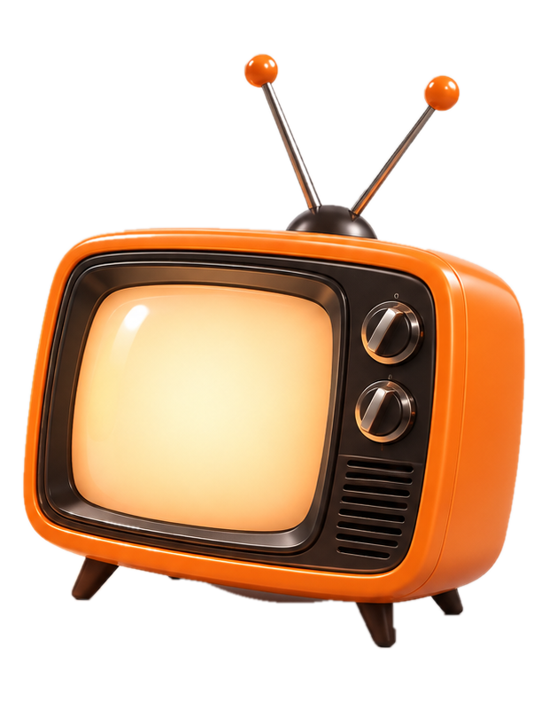
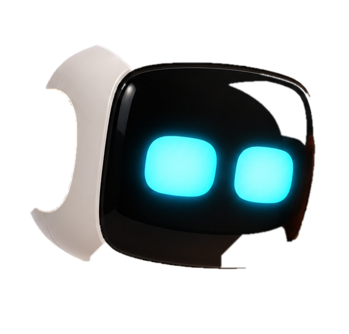

🤖 Gigabajt robot 06
Test ruchomej głowy i telewizora. Stuknij dwa razy w głowę, żeby robocik się przywitał.


Cześć, co słychać?
Ogląda telewizor
Test 06: głowa i telewizor z zatwierdzonej grafiki, animowane oddzielnie. To animacja 2,5D — nie pełny obrotowy model 3D. Aplikacji CMR nie zmieniono.